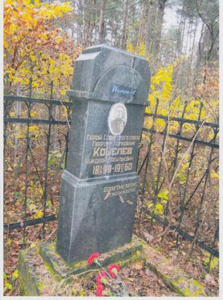
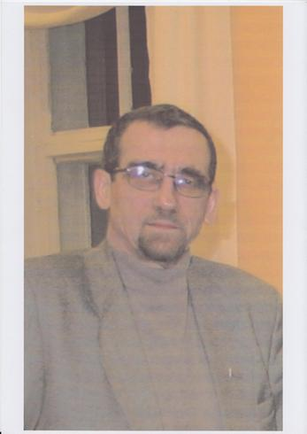

февраль 2012 года
Герои Советского Союза и Герои России, похороненные в Твери
Судьба более трехсот двадцати Героев Советского Союза связана с Тверской землей: это Герои, родившиеся в нашей области, приехавшие к нам на постоянное место жительства в послевоенные годы, проходившие службу в частях и соединениях, дислоцировавшихся на территории области.
На одном из заседаний депутатской группы Тверской городской Думы «Никто не забыт, ничто не забыто» было принято решение выяснить в каком состоянии находятся могилы Героев Советского Союза умерших и похороненных на гражданских кладбищах города. Депутаты справедливо предположили, что уже не у всех захороненных могут быть проживающие в городе родственники, что есть такие могилы, за которыми никто не ухаживает. И тут выяснилось - полных данных о количестве захороненных и местах захоронения нет. С помощью сотрудников библиотеки им. Горького и Тверского государственного объединенного музея, информации, полученной от жителей города, нам удалось собрать сведения, которые приводятся в таблице.
Герои Советского Союза и Герои России,
похороненные на гражданских кладбищах в Твери
№ п/п |
Фамилия, имя и отчество |
Даты жизни |
Когда присвоено звание Героя |
Где похоронен |
1 |
АВДЕЕВ Анатолий Константинович |
01.11.1925 – 18.06.1996 |
24.03.1945 |
кл. Дмитрово-Черкассы |
2 |
БАРИНОВ Давид Маркович |
26.06.1905 – 21.05.1990 |
17.10.1943 |
кл. Дмитрово-Черкассы |
3 |
БИРЮКОВ Василий Николаевич |
11.12.1919 – 15.10.1993 |
23.02.1945 |
кл. Дмитрово-Черкассы |
4 |
БРОСАЛОВ Александр Никанорович |
22.08.1912 – 22.01.1995 |
27.06.1945 |
кл. Дмитрово-Черкассы |
5 |
ВИДУЛИН Николай Гаврилович |
20.10.1923 – 18.01.2000 |
27.08.1943 |
кл. Дмитрово-Черкассы |
6 |
КАТОРЖНЫЙ Иван Павлович |
11.09.1920 – 16.11.1982 |
05.11.1944 |
кл. Дмитрово-Черкассы |
7 |
КОРОБКОВ Павел Терентьевич |
05.10.1909 – 12.04.1978 |
22.02.1939 |
кл. Дмитрово-Черкассы |
8 |
КУЗНЕЦОВ Михаил Петрович |
14.11.1923 – 02.02.1990 |
22.02.1944 |
кл. Дмитрово-Черкассы |
9 |
МАНОХИН Александр Николаевич |
08.07.1920 – 26.01.1995 |
19.08.1944 |
кл. Дмитрово-Черкассы |
10 |
МАСЛЕННИКОВ Николай Петрович |
03.05.1920 – 09.01.2001 |
24.03.1945 |
кл. Дмитрово-Черкассы |
11 |
НИКОЛАЕВ Александр Петрович |
14.11.1919 – 13.06.1909 |
29.06.1945 |
кл. Дмитрово-Черкассы |
12 |
РУДАКОВ Николай Яковлевич |
23.10.1906 – 29.08.1977 |
23.10.1943 |
кл. Дмитрово-Черкассы |
13 |
СМИРНОВА Мария Васильевна |
31.03.1920 – 10.07.2002 |
26.10.1944 |
кл. Дмитрово-Черкассы |
14 |
ШАЙКИН Павел Кондратьевич |
25.01.1914 – 13.09.1989 |
24.03.1945 |
кл. Дмитрово-Черкассы |
15 |
РУМЯНЦЕВ Михаил Ильич |
16.09.1916 – 04.02.1967 |
01.07.1944 |
кл. Николо - Малица |
16 |
КОШЕЛЕВ Николай Васильевич |
08.07.1899 – 22.10.1960 |
10.01.1944 |
г. Тверь, Первомайское кл., центральная аллея |
17 |
БАРАНОВ Дмитрий Васильевич |
1908 - 1964 |
10.04.1945 |
Умер в г. Калинине |
18 |
ЖУКОВ Иван Михайлович |
1906 - 03.1954 |
31.05.1945 |
Похоронен в г. Калинине |
19 |
КОКШАРОВ Иван Иванович |
06.09.1919 – 04.07.2004 |
19.04.1945 |
кл. Дмитрово-Черкассы |
20 |
КОНОВАЛОВ Сергей Иванович |
15.02.1920 – 25.02.1975 |
15.05.1946 |
Похоронен в г. Калинине |
21 |
КОРОЛЕВ Федор Филиппович |
19.02.1924 – 12.05.1980 |
24.03.1945 |
Похоронен в г. Калинине |
22 |
КРАСАВИН Константин Алексеевич |
20.05.1917 – 01.1988 |
|
Похоронен в г. Калинине |
23 |
КУЗОВ Демьян Васильевич |
01.11.1909 – 06.05.1979 |
31.05.1945 |
Похоронен в г. Калинине |
24 |
ЛОГИНОВ Сергей Дмитриевич |
28.09.1908 - 03.06.1992 |
21.07.1944 |
кл. у дер. Б. Борки Калининского р-на |
25 |
РУМЯНЦЕВ Михаил Ильич |
16.09.1916 – 04.02.1967 |
01.07.1944 |
кл. Николо - Малица |
26 |
ТВЕРЕТИНОВ Дмитрий Иванович |
07.11.1923 – 1953 |
24.03.1945 |
г. Тверь, Первомайское кл. |
27 |
ЦИВЧИНСКИЙ Виктор Гаврилович |
22.11.1906 – 30.05.1961 |
24.12.1943 |
Похоронен в г. Калинине |
28 |
ШАПШАЕВ Иван Леонтьевич |
1910 – 02.10.1967 |
15.05.1946 |
Похоронен в г. Калинине |
29 |
ГАЛАУЛИН (ГОЛОУЛИН) Василий Николаевич |
01.01.1912 – 04.07.1976 |
29.03.1944 |
Похоронен в г. Калинине |
Герои Советского Союза
похороненные в братских могилах г. Твери.
1 |
ЛУКИН Михаил Алексеевич |
01.12.1907 – 17.10.1941 |
17.11.1939 |
пл. В.И. Ленина |
2 |
ПИЧУГИН Евгений Иванович |
17.01.1922 – 19.03.1942 |
14.02.1943 |
пос. Мигалово |
3 |
СИДОРЕНКО Марк Лукьянович |
02.08.1915 – 27.03.1945 |
28.09.1943 |
пос. Мигалово |
Герои России
похороненные в г. Твери.
1 |
ЕЛИЗАРОВ Владимир Федорович |
20.11.1972 – 13.07.1993 |
19.07.1993 |
кл. Дмитрово-Черкассы |
2 |
Касьянов Илья Анатольевич |
28.05.1961 – 08.11.1999 |
15.05.1995 |
кл. Дмитрово-Черкассы |
3 |
МИХАЙЛОВ Александр Валерьевич |
16.06.1971 – 19.10.1993 |
07.10.1993 |
кл. Дмитрово-Черкассы |
Места захоронения восьми Героев Советского Союза мы установить так и не смогли. Известно только, что они умерли в Калинине (Твери). Поэтому обращаемся к жителям города с просьбой: если Вы знаете места захоронения БАРАНОВА Д.В., ЖУКОВА И.М., КОНОВАЛОВА С.И., КОРОЛЕВА Ф.Ф., КРАСАВИНА К.А., КУЗОВА Д.В., ЦИВЧИНСКОГО В.Г., ШАПШАЕВА И.Л., ГАЛАУЛИНА В.Н. сообщить о них в редакцию газеты.
|

От редакции
Четвертый год выходит в свет регулярное печатное издание Благотворительного фонда «Жить и Помнить» поиску и увековечению памяти уроженцев Тверской области, пропавших без вести в годы Великой Отечественной войны. Нас читают в музеях и библиотеках, в ветеранских организациях и поисковых отрядах. Мы дорожим тем, что страницы нашей газеты бережно хранятся родственниками погибших воинов, которые благодаря изданию наконец-то узнали подробности о судьбе героев и месте их захоронения. Ценим тот широкий круг заинтересованных читателей не только в Тверской области, но и за ее пределами, который сложился вокруг газеты и вместе с нами активно участвует в поиске. По мере возможности мы публикуем ваши, дорогие читатели, обращения, воспоминания о ваших отцах и дедах – солдатах Великой Отечественной. И, главное, когда обращаемся к вам за помощью в розыске родственников погибших, уверены – отклик будет!
2011 год в работе фонда «Жить и Помнить» оказался особо насыщенным. Укрепилось наше сотрудничество с государственными структурами, местными администрациями, музеями, архивами, общественными организациями, общеобразовательными учреждениями, поисковыми отрядами области и других регионов России по вопросам поиска пропавших без вести солдат, военной истории и военно-мемориальной работы. Выросло число обращений в фонд граждан, отчаявшихся найти хоть крупицу сведений о погибших отцах и дедах. Многим из них мы помогли. Наконец, в непростых обстоятельствах, за счет собственных средств фонд приступил к поэтапному изданию «Книги Памяти». Вышли из печати ее первая и вторая главы.
Всю эту работу мы намерены продолжать и в наступившем году. Восстановление и укрепление исторической памяти, пропаганда традиций любви к родине, мужества и героизма, воздание святого долга памяти погибшим героям остаются как никогда актуальны. Решать все эти задачи мы будем вместе с вами, уважаемые читатели.
Пользуясь случаем, сердечно поздравляем президента Фонда «Жить и Помнить» Мусина Леонида Михайловича с награждением Почетной грамотой Губернатора Тверской области, которой он удостоен за активную благотворительную деятельность и значительный вклад в патриотическое воспитание жителей Тверской области.
Поздравляем ветеранов Великой Отечественной войны и Вооруженных сил, военнослужащих, всех читателей с Днем Защитника Отечества. Желаем здоровья, благополучия, мужества и оптимизма! |
ПАМЯТИ ТОВАРИЩА
17 января исполнилось три года с того дня, когда ушел из жизни наш товарищ, известный тверской журналист Г.В. ХАРИТОНОВ.
Георгий Васильевич был инициатором создания нашей общественной организации, которая работает вот уже более пяти лет. Он сформулировал ее цели и первоочередные задачи, положил начало практической деятельности, нашел союзников в работе по поиску и увековечению Памяти павших защитников Отечества. Более двух лет, практически ежедневно, Георгий Васильевич работал над Книгой памяти пропавших без вести.
Из его публикаций в региональных СМИ жители области узнали имена советских воинов захороненных в Румынском городе Кымпия-Турзий, о лагере военнопленных в Ржеве, Вяземском дулаге, о подвиге легендарной советской разведчицы, нашей землячке Лидии Базановой. Многие замыслы Георгия Васильевича подтвердили свою жизнеспособность практическими делами Фонда «Жить и Помнить». Поэтому совершенно справедливо в предисловии недавно изданной первой главы Книги памяти пропавших без вести мы записали, что ее издание посвящается памяти публициста и общественного деятеля Г.В. Харитонова.
Светлая Память, Георгий Васильевич. И светлой Памяти о нем всем, кто знал его и кому с ним довелось работать!
Сотрудники Фонда «Жить и Помнить» |
|
|